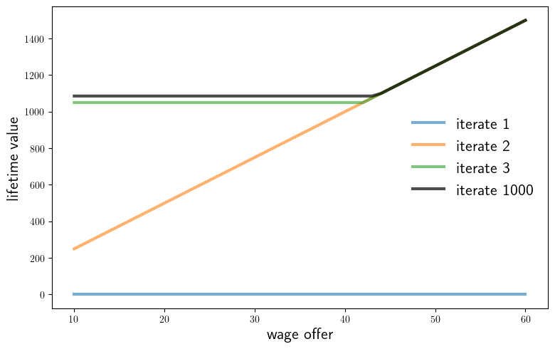

Introductions#
Contents
two_period_job_search.jl#
Show code cell source
"""
Two period job search in the IID case.
"""
using Distributions
"Creates an instance of the job search model, stored as a NamedTuple."
function create_job_search_model(;
n=50, # wage grid size
w_min=10.0, # lowest wage
w_max=60.0, # highest wage
a=200, # wage distribution parameter
b=100, # wage distribution parameter
β=0.96, # discount factor
c=10.0 # unemployment compensation
)
w_vals = collect(LinRange(w_min, w_max, n+1))
ϕ = pdf(BetaBinomial(n, a, b))
return (; n, w_vals, ϕ, β, c)
end
" Computes lifetime value at t=1 given current wage w_1 = w. "
function v_1(w, model)
(; n, w_vals, ϕ, β, c) = model
h_1 = c + β * max.(c, w_vals)'ϕ
return max(w + β * w, h_1)
end
" Computes reservation wage at t=1. "
function res_wage(model)
(; n, w_vals, ϕ, β, c) = model
h_1 = c + β * max.(c, w_vals)'ϕ
return h_1 / (1 + β)
end
# == Plots == #
using PyPlot
using LaTeXStrings
PyPlot.matplotlib[:rc]("text", usetex=true) # allow tex rendering
default_model = create_job_search_model()
" Plot the distribution of wages. "
function fig_dist(model=default_model, fs=14)
fig, ax = plt.subplots()
ax.plot(model.w_vals, model.ϕ, "-o", alpha=0.5, label="wage distribution")
ax.legend(loc="upper left", fontsize=fs)
#plt.show()
end
" Plot two-period value function and res wage. "
function fig_v1(model=default_model; savefig=false,
figname="../figures/iid_job_search_0.pdf", fs=18)
(; n, w_vals, ϕ, β, c) = model
v = [v_1(w, model) for w in model.w_vals]
w_star = res_wage(model)
continuation_val = c + β * max.(c, w_vals)'ϕ
min_w, max_w = minimum(w_vals), maximum(w_vals)
fig, ax = plt.subplots(figsize=(9, 5.5))
ax.set_ylim(0, 120)
ax.set_xlim(min_w, max_w)
ax.vlines((w_star,), (0,), (continuation_val,), lw=0.5)
ax.set_yticks((0, 50, 100))
ax.set_yticklabels((0, 50, 100), fontsize=12)
ax.set_xticks((min_w, w_star, max_w))
ax.set_xticklabels((min_w, L"$w^*_1$", max_w), fontsize=12)
ax.plot(w_vals, w_vals + β * w_vals, "-", alpha=0.8, lw=3,
label=L"$w_1 + \beta w_1$")
ax.plot(w_vals, fill(continuation_val, n+1), lw=3, alpha=0.8,
label=L"$c + \beta \sum_{w'} \max\{c, w'\} \varphi(w')$" )
ax.plot(w_vals, v, "k--", ms=2, alpha=1.0, lw=2, label=L"$v_1(w_1)$")
ax.legend(frameon=false, fontsize=fs, loc="upper left")
if savefig
fig.savefig(figname)
end
#plt.show()
end
fig_v1
fig_v1(savefig=true)

compute_spec_rad.jl#
Show code cell source
using LinearAlgebra
ρ(A) = maximum(abs(λ) for λ in eigvals(A)) # Spectral radius
A = [0.4 0.1; # Test with arbitrary A
0.7 0.2]
print(ρ(A))
0.5828427124746189
power_series.jl#
Show code cell source
using LinearAlgebra
# Primitives
A = [0.4 0.1;
0.7 0.2]
# Method one: direct inverse
B_inverse = inv(I - A)
# Method two: power series
function power_series(A)
B_sum = zeros((2, 2))
A_power = I
for k in 1:50
B_sum += A_power
A_power = A_power * A
end
return B_sum
end
# Print maximal error
print(maximum(abs.(B_inverse - power_series(A))))
5.6210591736771676e-12
s_approx.jl#
Show code cell source
"""
Computes an approximate fixed point of a given operator T
via successive approximation.
"""
function successive_approx(T, # operator (callable)
u_0; # initial condition
tolerance=1e-6, # error tolerance
max_iter=10_000, # max iteration bound
print_step=25) # print at multiples
u = u_0
error = Inf
k = 1
while (error > tolerance) & (k <= max_iter)
u_new = T(u)
error = maximum(abs.(u_new - u))
if k % print_step == 0
println("Completed iteration $k with error $error.")
end
u = u_new
k += 1
end
if error <= tolerance
println("Terminated successfully in $k iterations.")
else
println("Warning: hit iteration bound.")
end
return u
end
successive_approx
linear_iter.jl#
Show code cell source
include("s_approx.jl")
using LinearAlgebra
# Compute the fixed point of Tu = Au + b via linear algebra
A, b = [0.4 0.1; 0.7 0.2], [1.0; 2.0]
u_star = (I - A) \ b # compute (I - A)^{-1} * b
# Compute the fixed point via successive approximation
T(u) = A * u + b
u_0 = [1.0; 1.0]
u_star_approx = successive_approx(T, u_0)
# Test for approximate equality (prints "true")
print(isapprox(u_star, u_star_approx, rtol=1e-5))
Completed iteration 25 with error 2.911659384707832e-6.
Terminated successfully in 28 iterations.
true
linear_iter_fig.jl#
Show code cell source
include("linear_iter.jl")
using PyPlot
PyPlot.matplotlib[:rc]("text", usetex=true) # allow tex rendering
fig, ax = plt.subplots()
e = 0.02
marker_size = 60
fs=14
colors = ("red", "blue", "orange", "green")
u_0_vecs = ([2.0; 3.0], [3.0; 5.2], [2.4; 3.6], [2.6, 5.6])
iter_range = 8
for (u_0, color) in zip(u_0_vecs, colors)
u = u_0
s, t = u
ax.text(s+e, t-4e, L"u_0", fontsize=fs)
for i in 1:iter_range
s, t = u
ax.scatter((s,), (t,), c=color, alpha=0.3, s=marker_size)
u_new = T(u)
s_new, t_new = u_new
ax.plot((s, s_new), (t, t_new), lw=0.5, alpha=0.5, c=color)
u = u_new
end
end
s_star, t_star = u_star
ax.scatter((s_star,), (t_star,), c="k", s=marker_size * 1.2)
ax.text(s_star-4e, t_star+4e, L"u^*", fontsize=fs)
ax.set_xticks((2.0, 2.5, 3.0))
ax.set_yticks((3.0, 4.0, 5.0, 6.0))
ax.set_xlim(1.8, 3.2)
ax.set_ylim(2.8, 6.1)
#plt.show()
fig.savefig("../figures/linear_iter_fig_1.pdf")
Completed iteration 25 with error 2.911659384707832e-6.
Terminated successfully in 28 iterations.
true

iid_job_search.jl#
Show code cell source
"""
VFI approach to job search in the infinite-horizon IID case.
"""
include("two_period_job_search.jl")
include("s_approx.jl")
" The Bellman operator. "
function T(v, model)
(; n, w_vals, ϕ, β, c) = model
return [max(w / (1 - β), c + β * v'ϕ) for w in w_vals]
end
" Get a v-greedy policy. "
function get_greedy(v, model)
(; n, w_vals, ϕ, β, c) = model
σ = w_vals ./ (1 - β) .>= c .+ β * v'ϕ # Boolean policy vector
return σ
end
" Solve the infinite-horizon IID job search model by VFI. "
function vfi(model=default_model)
(; n, w_vals, ϕ, β, c) = model
v_init = zero(model.w_vals)
v_star = successive_approx(v -> T(v, model), v_init)
σ_star = get_greedy(v_star, model)
return v_star, σ_star
end
# == Plots == #
using PyPlot
using LaTeXStrings
PyPlot.matplotlib[:rc]("text", usetex=true) # allow tex rendering
# A model with default parameters
default_model = create_job_search_model()
" Plot a sequence of approximations. "
function fig_vseq(model=default_model;
k=3,
savefig=false,
figname="../figures/iid_job_search_1.pdf",
fs=16)
v = zero(model.w_vals)
fig, ax = plt.subplots(figsize=(9, 5.5))
for i in 1:k
ax.plot(model.w_vals, v, lw=3, alpha=0.6, label="iterate $i")
v = T(v, model)
end
for i in 1:1000
v = T(v, model)
end
ax.plot(model.w_vals, v, "k-", lw=3.0, label="iterate 1000", alpha=0.7)
#ax.set_ylim((0, 140))
ax.set_xlabel("wage offer", fontsize=fs)
ax.set_ylabel("lifetime value", fontsize=fs)
ax.legend(fontsize=fs, frameon=false)
if savefig
fig.savefig(figname)
end
#plt.show()
end
" Plot the fixed point. "
function fig_vstar(model=default_model;
savefig=false, fs=18,
figname="../figures/iid_job_search_3.pdf")
(; n, w_vals, ϕ, β, c) = model
v_star, σ_star = vfi(model)
fig, ax = plt.subplots(figsize=(9, 5.5))
ax.plot(w_vals, v_star, "k-", lw=1.5, label="value function")
cont_val = c + β * v_star'ϕ
ax.plot(w_vals, fill(cont_val, n+1),
"--",
lw=5,
alpha=0.5,
label="continuation value")
ax.plot(w_vals,
w_vals / (1 - β),
"--",
lw=5,
alpha=0.5,
label=L"w/(1 - \beta)")
#ax.set_ylim(0, v_star.max())
ax.legend(frameon=false, fontsize=fs, loc="lower right")
if savefig
fig.savefig(figname)
end
#plt.show()
end
fig_vstar
fig_vseq(savefig=true)

fig_vstar(savefig=true)
Completed iteration 25 with error 2.2046856429369655e-6.
Terminated successfully in 28 iterations.